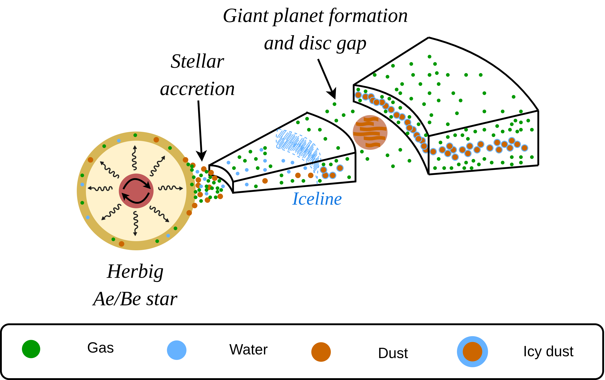
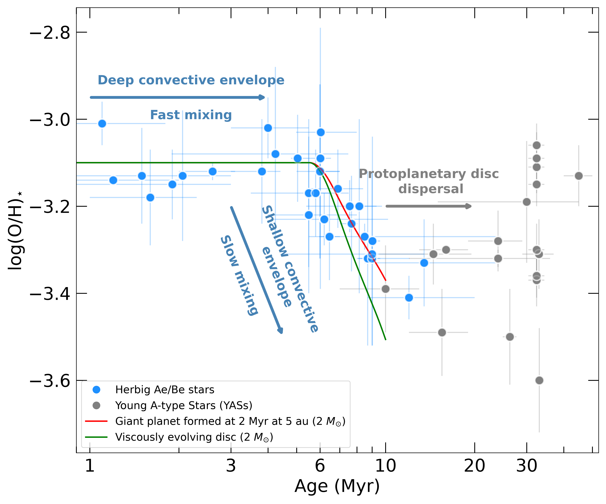
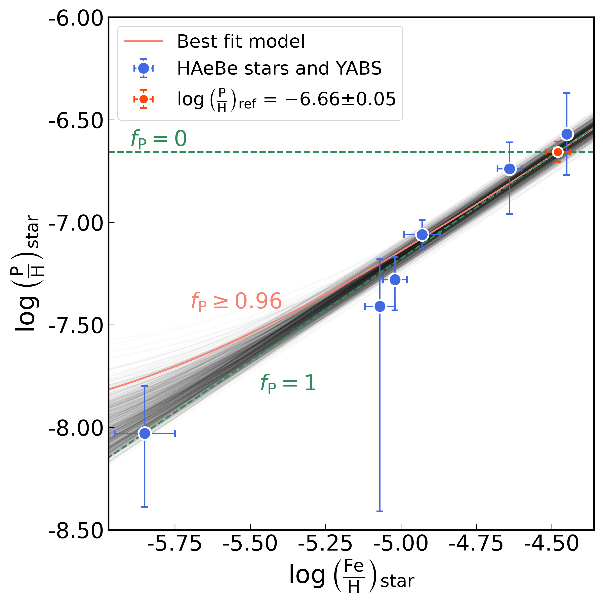
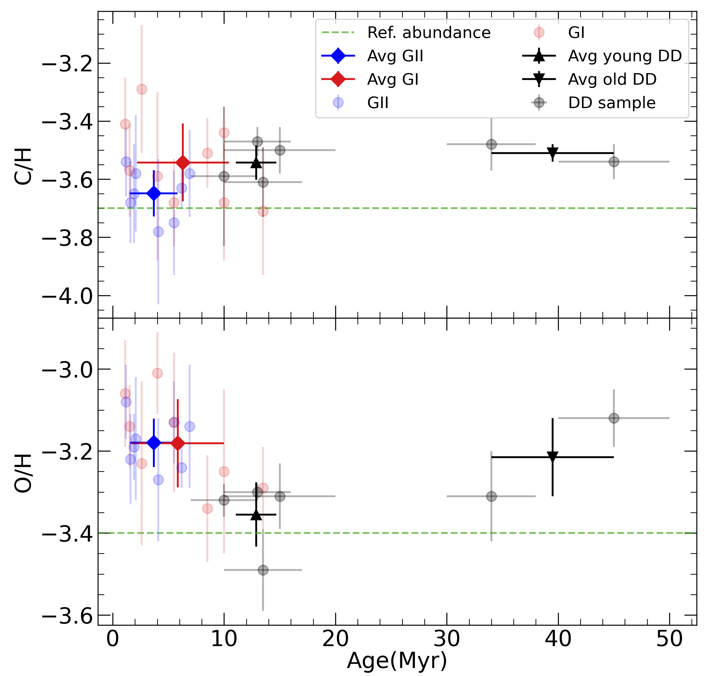
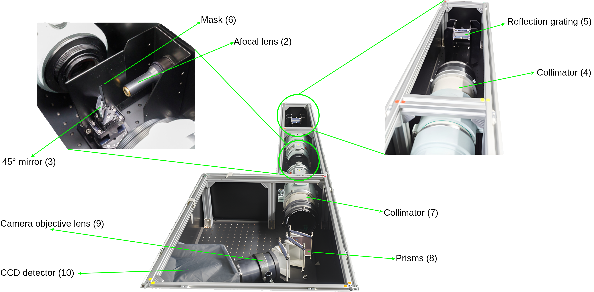
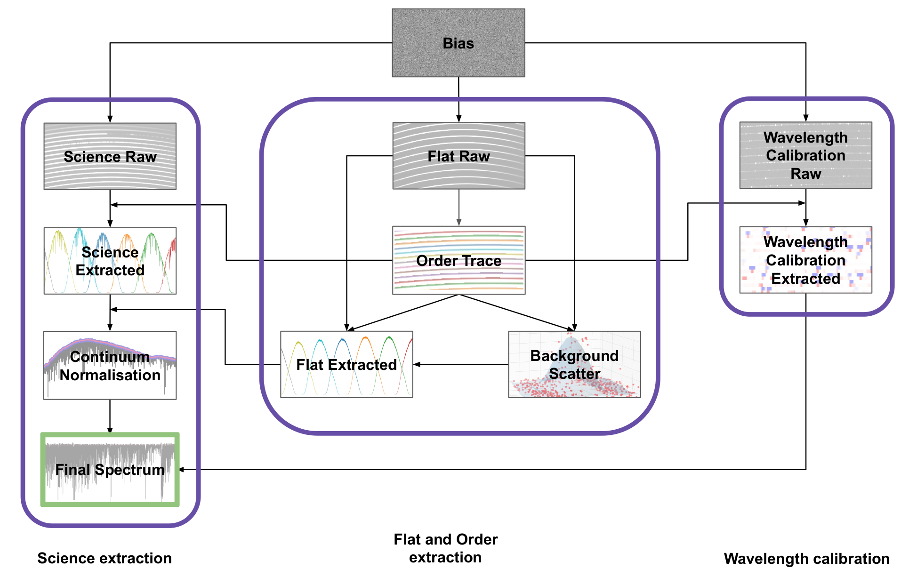

Introduction
Herbig Ae/Be stars are pre-main sequence stars with temperatures above ~6500 K with a protoplanetary disc around it. All protoplanetary discs physically and chemically evolve with time across the whole disc. Understanding this evolution is important this material forms the building blocks of planets. The inner regions of the protoplanetary discs are particularly interesting because they are the preferred location of rocky planet formation. The traditional way is to use James Webb Space Telescope (JWST) mid-infrared spectra of the inner disc. The mid-IR spectra show emission lines of gas molecules from a thin upper layer of gas in the inner disc, while the bulk of material remains hidden. Estimating the bulk composition of the inner disc requires detailed thermochemical modelling with multiple assumptions, which can result in a large uncertainty.
I use a different, indirect approach based on the composition of Herbig Ae/Be stars. The idea is that accretion from the inner disc contaminates the upper layers of the star and alters the stellar photospheric composition. This contamination effect is significant for Herbig Ae/Be stars since they either have a thin convective envelope or a fully radiative envelope, where the accreted material cannot get mixed efficiently with the stellar interior. I use this idea to trace the bulk elemental composition of the inner protoplanetary disc. A schematic description of this is shown in Figure 1.

1. Inner protoplanetary disc oxygen evolution on the Herbig Ae/Be stars
In Borthakur et al. 2025 I had tentative evidence that the oxygen abundance in the photospheres of Herbig Ae/Be stars decreases with age. Currently I have analysed a larger sample of Herbig Ae/Be stars which show a clear depletion of the oxygen abundance with time (Figure 2; Borthakur et al. in prep).

The depletion trend of the oxygen abundance with time in Herbig Ae/Be star can be explained by a viscously evolving disc where initially the icy pebbles deliver water to the inner disc and the water abundance in the inner disc peaks around 1 Myr. Once the outer disc runs out of icy pebbles the water abundance in the inner disc decreases which in turn results in the decrease of the total oxygen abundance since water is one of the main oxygen reservoir in a protoplanetary disc (green curve in Figure 2). This overall depletion trend can also be affected by the presence of a gap opening due to giant planet formation (red curve in Figure 2).
2. The refractory fraction of phosphorus in planet-forming discs
Phosphorus is one of the 5 key elements for life but its reservoirs in a protoplanetary disc remains unknown. No phosphorus bearing molecules have been observed so far in a protoplanetary disc which makes the phosphorus chemistry in the disc unconstrained. In Borthakur et al. 2026b I quantified the fraction of phosphorus in the inner protoplanetary disc that is locked in dust. The idea is to estimate the phosphorus abundance for a sample of Herbig Ae/Be stars and compare it with their iron abundance (Figure 3). The varying iron abundance of the star represents the varying amount of dust accreted onto it. Assuming iron is completely locked in dust, the slope of the phosphorus vs the iron abundance then gives the fraction of phosphorus that is locked in dust. I used high resolution archival far-UV spectra from the Hubble Space Telescope's Space Telescope Science Instrument (STIS) and Cosmic Origin Spectrograph (COS) data to measure the phosphorus abundance of 5 Herbig Ae/Be stars. I estimated that more than 96% of phosphorus in the inner disc is locked in dust implying less than 4% of phosphorus is in gas phase. This estimate also explains the lack of observation of any phosphorus bearing molecules in the protoplanetary disc to date.

Previously, in Kama et al. 2025 we studied the phosphorus reservoirs in the protoplanetary disc around a Herbig Be star HD 100546. The stellar phosphorus abundance was depleted similar to iron implying that the phosphorus is likely locked in dust as well. Upper limits on the gas-phase P abundance also confirms that the P abundance is highly depleted onto dust and the likely P reservoirs in a protoplanetary discs are dust minerals like apatite or schreibersite.
3. Abundance analysis of stars hosting gas-rich debris discs
In Borthakur et al. 2025, I studied the stellar abundance of a sample of young A-type stars with gas-rich debris discs. The main goal was to test whether we can detect signature of debris disc accretion on their stellar photosphere. Our estimates suggested that the accretion rate from the debris disc is too low to have a detectable imprint on the stellar photosphere of these A-type stars. We still found 2 stars in our sample which show a lower abundance of refractory elements, i.e. elements mostly locked in dust whereas the the abundance of volatile elements is close to solar. This refractory elemental depletion has been observed in Herbig Ae/Be stars with gaps in their discs (also called group I stars). Whereas Herbig Ae/Be stars with no disc gaps (group II stars) show solar like refractory elemental abundances. The refractory depletion is due to the formation of gaps which blocks larger dust pebbles to viscously move inwards and accrete onto the star whereas it allows the gas to freely pass through it. As a result, the inner disc gets dust depleted and the star has lower abundance of refractory elements. Stars with this chemical peculiarity in their abundances are called λ-Böo-type star. Two stars in our sample of A-type stars with debris discs show λ-Böo-type chemical peculiarity suggesting that they carry this signature from their earlier protoplanetary disc accretion.
In this work, we also find tentative evidence that the oxygen abundance in Herbig Ae/Be stars decreases with age but the carbon abudnance remains almost constant (Figure 4). After the Herbig Ae/Be stars lose their protoplanetary discs, the oxygen abundance in the stellar photosphere returns back to its intial value due to rotational mixing in the star.

4. The Tartu Observatory Fiber-fed Echelle Spectrograph (TOFES) Data Reduction Pipeline
In Borthakur et al. 2026a, I developed the data reduction pipeline for the newly installed Tartu Observatory Fiber-fed Echelle Spectrogaph (TOFES; Figure 5). TOFES has a spectral resolution of ~33000 and covers a wavelength range of 3500-8500 Å. The pipeline was developed using the PyReduce package which is a python based data reduction package for echelle spectrographs. The pipeline is publicly available and can be found here: https://github.com/Sandipan-Borthakur/TOFES-DRP. A flowchart explaining the data reduction steps is shown in Figure 6 below. For more details, please refer to the paper or contact me.

